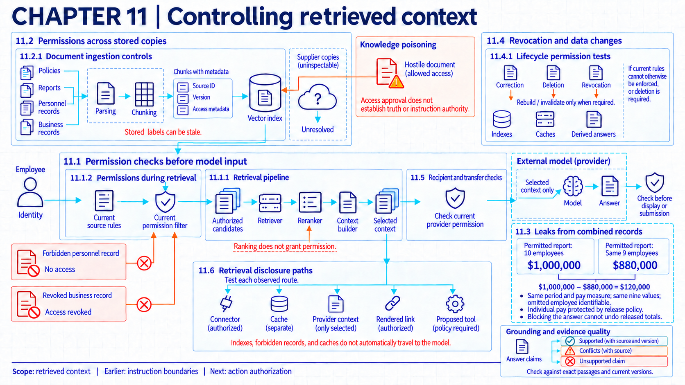
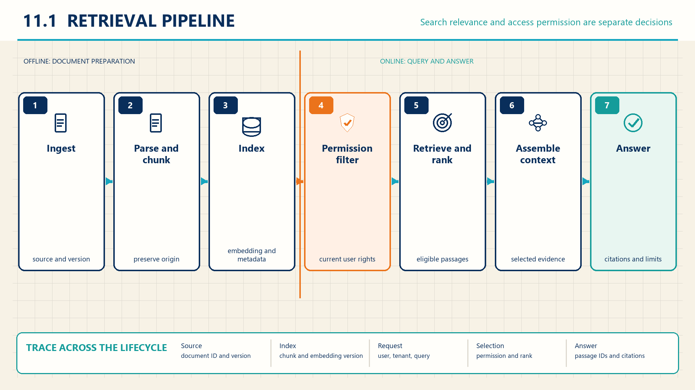

11 Access through retrieved information
Retrieval controls determine which records may reach the employee, model provider, and other recipients, including after permissions or stored copies change.

Suppose an employee sends a request to an assistant about the travel reimbursement limit. Similarity search returns three candidates: the current travel policy the employee may read, a payroll record the employee may not read, and a business draft the employee could read yesterday but can no longer access. Assume the external model provider may process only the current policy for this request. The application should admit only the current policy into the model request, and it should check again before displaying the answer, because permissions can change between the two moments. A useful answer built from the wrong records is still a disclosure failure.
Whether a retrieved passage is true or hostile is a different question, answered in poisoning retrieved content. The broader disclosure paths (Chapter 05) include transfers and retained copies as well as information inferred from model queries. For each candidate and each copy, the team still must check whether this user may receive it through this request. Retrieval here works as described in Chapter 5: an ingestion job prepares chunks, an index stores them with their source versions, a retriever and reranker select candidates, and context assembly formats the model input. The threat record from mapping threats and controls (Chapter 02) fixes what the attacker can change. A permission change or a stale copy can disclose without any attacker at all.
11.1 Permissions before disclosure
Two designs enforce this boundary at different points. Permission-aware filtering can narrow the eligible set before ranking. If that filter correctly applies the current rules and covers every input route, it keeps forbidden candidates out of the ranker. Access to other copies and logs still requires separate controls. A second design ranks a broader set inside a service authorized to process those records, then applies the employee and destination checks before exposing candidate text, scores, or identifiers to any recipient lacking that access. Otherwise filtering comes too late, because the forbidden record has already crossed to a new recipient. An external reranker or model provider receiving candidates is itself a recipient with its own permission question, treated in the final section. Neither order prevents every forbidden copy, cache entry, or log line on its own. Each remaining store needs its own check.
11.1.1 Retrieval pipeline

Retrieval-augmented generation is useful when an answer depends on information outside the model’s fixed parameters, and the security decision is which stored material may become part of the current user’s model input. Each stage keeps the record the next check needs: the trace notes the query, the employee identity, candidate chunk identifiers, the ranking result, the access decision, the assembled context, the model version, and the answer. A failure at any step can change what the model sees without changing the user’s words.
Where the mapping from a chunk to its source object is missing, the service should deny the candidate until the source mapping is repaired: an unmapped chunk cannot pass a permission check. Cache entries that cannot be tied to a current rule should be invalidated, policy data refreshed before the decision, and the affected derived store rebuilt where a rebuild is needed. Extra checks add latency and can lower recall when records are incomplete.
11.1.2 Permissions during retrieval
Search relevance does not answer whether the current employee may read a result. The access service decides from three inputs: the current employee identity, the chunk-to-source mapping, and the current access rule. Tenant and department labels can narrow search, but the authoritative decision still belongs to the organization’s access-control system.
NIST zero trust guidance calls for least-privilege, per-session access to resources and states that access to one resource does not grant access to another.1 It also describes decisions that use the subject, requested resource, service, and device rather than network location alone.2 A retrieval application must still map document and chunk identifiers to the real authorization system. In this design, context assembly should receive only text permitted for the employee and the model provider. Checking again before delivery narrows the time gap in which a permission can change. It does not remove races in general or recover data already sent to the provider. The organization states which snapshot and version each check uses and how old a policy reading may be, without assuming one atomic design fits every deployment. Allowed content still needs a separate trust check, since permission says nothing about truth.
Example
Filtering three candidates for one employee. Suppose employee E17 asks about the travel policy. The ranking step runs inside the authorized retrieval service: no candidate text, score, or identifier reaches the employee, an external reranker, or the model before the access decision. Similarity search returns three candidate records: chunk-44 from travel-policy-v5 with similarity 0.91, chunk-82 from executive-travel-draft with 0.88, and chunk-17 from travel-faq-v2 with 0.79.
Assume the access service allows the policy and the FAQ but denies the draft under the current rule, so context assembly records only chunk-44 and chunk-17. Before delivery, the service checks both source objects again and receives two allow decisions. Suppose the recorded context and serialized provider request contain only the two allowed chunks, and the recorded answer cites those sources without the synthetic marker from the denied draft. These observations support the exclusion of that draft from the inspected request and answer. They do not establish that unrelated logs, caches, or other copies exclude it. The record also confirms that this provider is permitted to receive both admitted chunks.
| Rank | Chunk | Source object | Similarity score | Access decision | Context result |
|---|---|---|---|---|---|
| 1 | chunk-44 |
travel-policy-v5 |
0.91 | allow | included |
| 2 | chunk-82 |
executive-travel-draft |
0.88 | deny | excluded |
| 3 | chunk-17 |
travel-faq-v2 |
0.79 | allow | included |
When the rule changes, the same trace runs again under the new rule and reports forbidden chunks excluded over all forbidden candidates with allowed chunks returned over all allowed candidates. Rechecking costs latency and can reduce availability when the policy service fails, and a derived store can bypass the rule if its access path is not covered by the recheck.
11.2 Permissions across derived copies
A chunk allowed once does not stay allowed by itself. Index entries, embeddings, caches, and conversation histories carry the content forward along new access paths, and each path needs an enforceable link to the current rule: stored labels checked while still fresh, or a live lookup at request time. Stored labels alone can go stale, so a label recorded yesterday does not settle today’s request. Revocation removes future access under a changed rule. It is distinct from erasing every copy and from reversing a reading that already happened. Deletion, correction, and revocation are separate outcomes with separate tests. Model parameters enter this path only where training explicitly writes them. Ordinary retrieval indexing does not update weights.
11.2.1 Document ingestion controls
Before retrieval can enforce access or show evidence, ingestion has to preserve what the source is and which version entered the index. The ingestion record links each chunk to the source system, source object, version, parser, extraction time, and access labels. Parser isolation and file-type checks limit damage during processing: intake checks follow compromise through acquired components (Chapter 07), and isolating the parser’s execution follows isolation failures during execution (Chapter 08). International secure AI guidance recommends checking and sanitizing inputs and documenting data, models, and system decisions across development.3 Where a chunk’s source mapping is ambiguous, the chunk should be denied until reingestion or a repaired record restores the link; source links can sometimes be reconstructed that way, but a missing label never authorizes access.
A privacy inventory of data actions, elements, purposes, and processing environments supports the same register from the exposure side.4 The general copy inventory in exposing data through AI (Chapter 05) records purpose, recipient, retention, and deletion evidence per copy; retrieval applies that register to derived copies, where the question is not only where copies sit but which derived copies each changed permission update must cover during propagation.
11.3 Disclosure through combined context
Disclosure can occur before, during, or after model generation. An overbroad connector may ingest material the application should never see. A stale permission filter may place forbidden text in context. A shared cache can return another user’s result, while an answer, link, or proposed tool call can carry sensitive text to a new destination. Caller, model provider, tools, logs, and the answer recipient may each hold different permissions for the same text, so each transfer needs its own recipient check.
Permission to release individual records does not by itself establish that all information inferable from their combination is suitable for release. The relevant restriction must be explicit: it may concern the recipient, the purpose, or a protected fact. Detecting such a conflict can reveal a problem in the source-release policy as well as in answer generation.
Example
Information from overlapping reports. Suppose a permitted report gives annual base pay of $1,000,000 for ten employees. A second permitted report covers the same period and pay measure for nine of those employees, totaling $880,000. The employee omitted from the second report is identifiable, and the other nine values are unchanged. Subtracting the totals reveals $120,000 for that employee.
Assume the organization’s release policy is intended to protect individual pay. Blocking an assistant from displaying the subtraction cannot remove information already available in the two reports. The organization would need to reconsider which overlapping totals it releases and to whom. The privacy and inference discussion (Chapter 05) explains why checking each answer separately may miss information learned across releases.
11.3.1 Retrieval disclosure paths
OWASP lists disclosure, altered content, unauthorized function access, and command execution as possible consequences of prompt injection.5 The indirect-prompt-injection study includes tested cases where manipulated content caused information to move through links or connected application behavior, with paths that depend on the permissions and rendering behavior of the tested applications.6
An end-to-end disclosure test marks synthetic sensitive text at the source, then watches ingestion, retrieval, context, answer rendering, cache keys, network requests, and tool proposals. This locates the component that crossed the boundary instead of assigning every leak to the model. The connector, access service, cache, renderer, and action gateway each enforce a separate boundary using source, user, destination, and request state. The measurement reports synthetic disclosures over all eligible canary cases and clean completions over all ordinary cases. When no marker is observed in the monitored routes, including the provider payload where the organization inspected it, the result covers only those routes. End-to-end tracing costs storage and can itself expose sensitive content. An uninstrumented cache, alternate output channel, or reused identifier can hide a leak.
11.3.2 Grounding and evidence quality
When permissions limit what can be retrieved or shown, the team still must check that the answer is supported by what was allowed through. The support method in poisoning retrieved content compares each material claim against the exact allowed passages under the organization’s version rule. When the authoritative source for a claim is forbidden to this user, the answer cannot borrow its authority: the application should omit the claim or mark the limit rather than hide it behind a citation to an older allowed source.
The NIST Generative AI Profile recommends comparison with known ground truth through human review, automated evaluation, or both.7 An accurate support check can establish whether a claim follows from the permitted passages. It does not establish their truth, and it says nothing about passages the requester was never allowed to see.
11.4 Revocation and stale access
Retrieval security changes over time even when application code is unchanged. A document can be corrected or deleted. An employee can lose access, and a connector can be revoked. An old answer can remain in a cache. The organization needs a deadline for enforcing each changed permission and separate evidence for any required deletion or correction. Successful revocation does not establish that the stored bytes are gone.
11.4.1 Lifecycle permission tests
The NIST Generative AI Profile recommends tracking data-set deletion and correction and examining effects on records about content sources.8 NIST media-sanitization guidance distinguishes the sanitization method from verification and validation of its result.9
A lifecycle test creates and indexes a synthetic document. It confirms authorized retrieval before removing the employee’s access, then repeats the query against indexes and caches. A second test deletes or corrects the source and checks each derived store against a stated deadline. The deletion trace in exposing data through AI (Chapter 05) covers source, index, cache, conversation, backup, and provider copies; retrieval tests apply that method to derived stores, where reindexing, cache invalidation, deletion propagation, and connector revocation decide whether forbidden context persists. Short deadlines increase processing cost and can interrupt service during rebuilds. An unregistered cache or supplier copy can remain outside the route, so the organization records inaccessible supplier evidence as a limit. Passing cannot prove deletion from a component the organization cannot inspect.
A changed access rule can block future retrieval without deleting a document that other employees may still use. Purging a cache or rebuilding an index is needed only where its design cannot otherwise apply the new rule correctly, or where deletion is separately required. Tests report forbidden returns after revocation and the delay until each covered path enforces it. Deletion tests examine the tracked copies instead. An interim access block can limit exposure during repair. Supplier-held copies require supplier action and evidence. Repeating a test after a missed deadline does not erase the earlier delay.
11.5 External context and destinations
A final boundary sits where retrieved information leaves the organization: the serialized request to an external model provider and any tool proposal carrying retrieved text outward. Field checks, connector scope, and destination controls act at different boundaries and need separate enforcement points.
Connector scopes restrict what a service can fetch, following the least-privilege and separation-of-duties outcomes the Privacy Framework calls for.10 NCSC guidance recommends controls before potentially sensitive information is sent to an external API.11 The exact serialized provider request remains the evidence: a seeded disclosure test in exposing data through AI (Chapter 05) shows which seeded fields a provider request contains, and retrieval marks which admitted chunks contributed to the outgoing payload. A connector that sends data before the check, or an encoded passage the content rule misses, bypasses the control.
Answer assembly needs its own recipient check, separate from the retrieval-time employee check. The assembled answer, its citations, and any proposed tool call go to specific recipients, so the service verifies each recipient against the current rule before display, logging, or submission. Where the operation needs another identity’s authority, that approval check belongs to delegation beyond user authority (Chapter 12). What the organization sends, and what it can still verify afterward, also bounds the later evidence: permission states observed at retrieval and return feed live operation (Chapter 15), supplier duties for provider-held copies belong to responsibility across organizational boundaries (Chapter 21), and disclosure testing method belongs to evidence for release decisions (Chapter 14).
Note
Chapter checkpoint. Suppose an employee requests the current travel limit. Search ranks one allowed policy, one forbidden draft, and one allowed but older FAQ. What must the retrieval record show before the answer can be accepted?
Answer. Link each chunk to its source object and version, record the employee identity, preserve the ranking, and show the access decision that excluded the forbidden draft. Record the final assembled context and repeat authorization before delivery. Then compare each material answer claim with the exact allowed passages using the support method taught in poisoning retrieved content, applying the organization’s rule for choosing the current version. This evidence supports the tested answer path. It does not establish source authenticity, complete cache invalidation, or general grounding accuracy.
Scott Rose, Oliver Borchert, Stu Mitchell, and Sean Connelly (2020), Zero Trust Architecture, NIST SP 800-207, section 2.1, tenet 3, printed p. 6, source. Checked 2026-09-16. The publication gives an architecture principle. It does not define retrieval filters or show that filtering after retrieval prevents disclosure.↩︎
Scott Rose, Oliver Borchert, Stu Mitchell, and Sean Connelly (2020), Zero Trust Architecture, NIST SP 800-207, section 2.1, tenets 1 and 4-6, printed pp. 6-7, source. Checked 2026-09-16. A retrieval application must still map document and chunk identifiers to the real authorization system.↩︎
UK National Cyber Security Centre, CISA, and international partners (2023), Guidelines for Secure AI System Development, version 1.0, November 27, section 1, “Design your system for security,” p. 10, and section 2, “Document your data, models and prompts,” p. 12, source. Checked 2026-09-16. The guidance does not specify parser isolation, optical-character-recognition checks, metadata schemas, or version-selection rules.↩︎
National Institute of Standards and Technology, NIST Privacy Framework: A Tool for Improving Privacy through Enterprise Risk Management, version 1.0 (2020), NIST CSWP 01162020, Appendix A, Table 2, ID.IM-P4-P7, printed p. 20, source. Checked 2026-09-16. The framework does not supply an AI-specific list of prompts, embeddings, feedback, caches, and logs.↩︎
OWASP GenAI Security Project (2025), Top 10 for LLM Applications 2025, LLM01:2025, “Prompt Injection,” description and “Types of Prompt Injection Vulnerabilities,” impact list, source. Checked 2026-09-16. The categories are a study aid, not proof that a listed failure occurred or that the categories are independent in practice.↩︎
Kai Greshake et al. (2023), “Not What You’ve Signed Up For: Compromising Real-World LLM-Integrated Applications with Indirect Prompt Injection,” Proceedings of the Sixteenth ACM Workshop on Artificial Intelligence and Security (AISec), 79-90, DOI. Author manuscript arXiv:2302.12173v2, author-manuscript section 4.2, PDF pp. 6-10, source. Checked 2026-09-16. The demonstrated paths depend on the permissions and rendering behavior of the tested applications.↩︎
National Institute of Standards and Technology (2024), Artificial Intelligence Risk Management Framework: Generative Artificial Intelligence Profile, NIST AI 600-1, section 2.2, “Confabulation,” printed p. 6, and action MP-2.3-001, printed p. 24, source. Checked 2026-09-16. This is a recommended evaluation action, not evidence that a particular checker is accurate.↩︎
National Institute of Standards and Technology (2024), Artificial Intelligence Risk Management Framework: Generative Artificial Intelligence Profile, NIST AI 600-1, action MG-4.1-006, printed p. 44, source. Checked 2026-09-16. The action does not define a propagation deadline or prove deletion from every index, cache, model, or supplier store.↩︎
Ramaswamy Chandramouli and Eric A. Hibbard (2025), Guidelines for Media Sanitization, NIST SP 800-88 Rev. 2, section 4.5, “Sanitization Assurance,” especially sections 4.5.1-4.5.2, printed pp. 24-25, source. Checked 2026-09-16. Media sanitization does not by itself address logical copies in indexes, derived embeddings, supplier backups, or model weights.↩︎
National Institute of Standards and Technology, NIST Privacy Framework: A Tool for Improving Privacy through Enterprise Risk Management, version 1.0 (2020), NIST CSWP 01162020, Appendix A, Table 2, PR.AC-P4, printed p. 26, source. Checked 2026-09-16. The outcome does not prove that a particular connector scope or redaction rule is sufficient.↩︎
UK National Cyber Security Centre, CISA, and international partners, Guidelines for Secure AI System Development, version 1.0 (2023), Secure design, “Design your system for security as well as functionality and performance,” PDF p. 10, source. Checked 2026-09-16. Design guidance. It does not evaluate any specific data-loss-prevention product.↩︎